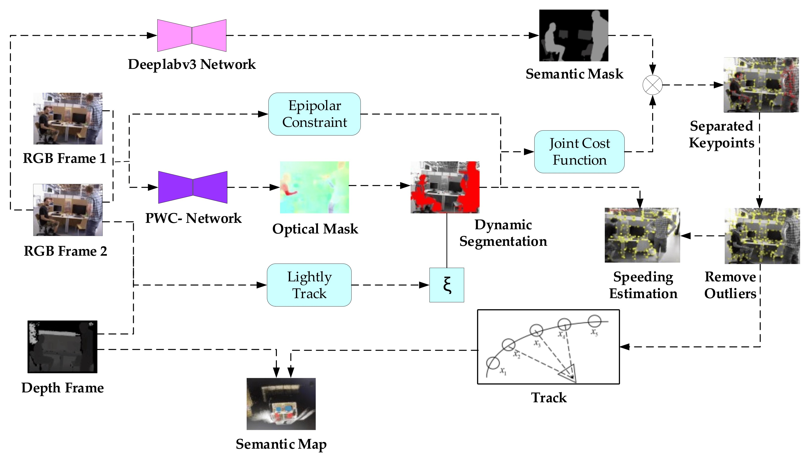

I am currently pursuing my Ph.D. at Zhejiang University, under the guidance of Prof. Yiyi Liao.
Prior to this, I completed my Master's degree in Control Science and Engineering at Northwestern Polytechnical University (NWPU), advised by Prof. Xiaoxiong Liu.
I received the Bachelor's degree from NWPU in 2019.
Currently, I have focused on projects involving feed-forward techniques for 3D/4D scene reconstruction and 3D generation. I serve as the conference reviewer of CVPR and NIPS.
I am looking for a full-time job in the field of 3D/4D scene reconstruction and 3D generation. Feel free to contact me at shengmiao@zju.edu.cn.
This paper surveys the evolution of deep learning architectures and paradigms for depth estimation across the monocular, stereo, multi-view, and monocular video settings. We explore the potential of these models to address existing challenges and provide a comprehensive overview of large-scale datasets that can facilitate their development.
A generalizable NeRF model that explicitly leverages geometric priors for feed-forward inference on unbounded sparse
urban scenes.

A Visual SLAM Robust against Dynamic Objects Based on Hybrid Semantic-Geometry Information Sheng Miao,
Xiaoxiong Liu,
Dazheng Wei,
Changze Li,
ISPRS International Journal of Geo-Information, 2021, SCI Journal
A method for static/dynamic image segmentation that leverages semantic and geometric modules, including optical flow residual clustering, epipolar constraint checks, semantic segmentation to tackle dynamics.
{kind=link}